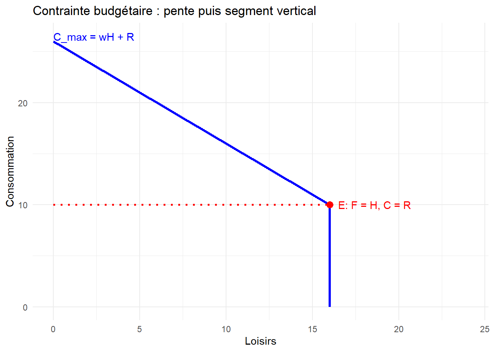

Show the code
library(ggplot2)
# Paramètres
H <- 16
w <- 1
R <- 10
F_max <- 24
# Domaine pour la pente
F_vals <- seq(0, H, length.out = 300)
C_vals <- w*H + R - w*F_vals # pente -w
df_pente <- data.frame(F = F_vals, C = C_vals)
# Point E
F_E <- H
C_E <- R # = w*H + R - w*H
# C intercept (F = 0)
C_max <- w*H + R
# Tracé
ggplot() +
# Droite de la contrainte (pente -w)
geom_line(data = df_pente, aes(x = F, y = C), color = "blue", size = 1.2) +
# Segment vertical bleu de E jusqu'à l'axe horizontal (C=0)
geom_segment(aes(x = F_E, xend = F_E, y = 0, yend = C_E), color = "blue", size = 1.2) +
# Segment horizontal pointillé rouge de E jusqu'à l'axe vertical (F=0, C=R)
geom_segment(aes(x = 0, xend = F_E, y = C_E, yend = C_E), color = "red", linetype = "dotted", size = 1) +
# Point E
geom_point(aes(x = F_E, y = C_E), color = "red", size = 3) +
# Annotation pour point E
annotate("text", x = F_E + 0.5, y = C_E, label = paste0("E: F = H, C = R"), color = "red", hjust = 0) +
# Annotation pour C intercept
annotate("text", x = 0, y = C_max + 0.5, label = paste0("C_max = wH + R "), color = "blue", hjust = 0) +
# Optionnel : un petit segment pour marquer C_max
geom_segment(aes(x = -0.5, xend = 0, y = C_max, yend = C_max), color = "blue", size = 1) +
labs(
title = "Contrainte budgétaire : pente puis segment vertical",
x = "Loisirs",
y = "Consommation"
) +
scale_x_continuous(limits = c(0, F_max)) +
theme_minimal()